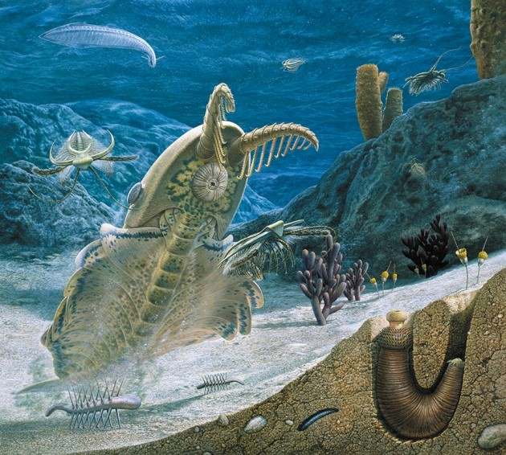
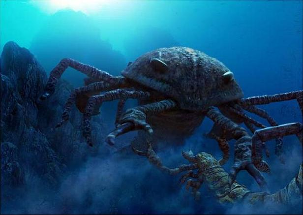

Geologic Time
Geological Periods
Planet Earth is 4.5 billion years old, and a way to represent this deep time is with the Geologic Time Scale. which organizes Earth's history depending on any fundamental changes in stratigraphy. The geologic time scale is like a giant calendar for Earth's history, stretching back billions of years. It can seem complex, but here's a simplified breakdown:
- Eons - These are the biggest slices of time, scaling to thousands of millions of years. There are four main eons: Hadean, Archean, Proterozoic, and Phanerozoic (we're currently in the Phanerozoic Eon).
- Eras - Think of these as subdivions within the eons, which span for hundreds of millions of years. For example, the Paleozoic Era is known for the rise of marine life.
- Periods - These are smaller segments within the eras, and typically last for tens of millions of years. The Jurassic Period, for instance, is famous for its dinosaurs.
- Epochs - The second smallest segment, found within periods and tending to be between 13 to 35 million years in length. Epoch names are often "Upper", "Middle", or "Lower". For example, the Cenozoic Era contains seven epochs
- Ages- The smallest segment in the chronological order, these segments are usually only a few million years in length. Ages typically end with the suffix "-an"/"-ian".

The History of Earth
The Cambrian period
- Name: Cambria, former name of Wales
- Time range:550 - 480 million years ago
- Oxygen percentage: 10%
- Known for: Rise of complex living beings like mollusks, trilobites and jellyfish.
The Cambrian was known for the rise of the very first complex organisms like Anomalocaris, trilobites and Haikouichthys
The Ordovician period
- Name: Ordovices, name of a Welsh tribe
- Time range: 480 - 440 million years ago
- Oxygen percentage: 12%
- Known for: Bloom of vertebrate fish like Pikaia, and giant mollusks like Endoceras.
Life was proliferating on the seas, but on land it was a different story, the sun's radiation made land an inhospitable habitat. this would change with the rising oxygen levels and the creation of the ozone layer allowing organisms to sun exposure, letting the birth to the first terrestrial plants. At the end of this period there was an ice age that led to the extinction of 85% of marine life.

The Silurian period
- Name: Silures, name of another Welsh tribe
- Time range: 440 - 410 million years ago
- Oxygen percentage:
- Known for: Evolution of the first jawed vertebrates, such as placoderms. First stem plants on land like Cooksonia
During the Silurian period, fish started to diversify as they devlop new characteristics that would serve as blueprints for our evolution like jaws. Fish divided into placoderms (armoured fish), cartilaginous fish and bony fishes. Most notably, in the group of the bony fishes, the very first lobe-finned fish (ancestors of tetrapods) appeared in this period.
The Devonian period
- Name: Devon, a county in Southwestern England
- Time range: 410 - 360 million years ago
- Oxygen percentage: 21%
- Known for: Evolution of Tiktaalik and the appearance of the tetrapods (animals with 4 limbs) began colonizing the land.
Placoderms go brrr, and then die out.
The Carboniferous period
- Name: Carbon, named after coal deposits that are characteristic of the period.
- Time range: 360 - 300 million years ago
- Oxygen percentage: 35%
- Known for: Giant insects and the first reptiles.
Giant Insects go brrrr.
The Permian period
- Name: Perm, a Russian region.
- Time range: 300 - 250 million years ago
- Oxygen percentage: 20%
- Known for: Diversification of reptiles, annd domination of mammal-like reptiles.
Giant reptiles go brrrr.
The Triassic period
- Name:
- Time range: 250 - 200 million years ago
- Oxygen percentage: 20%
- Known for: Evolution of the first dinosaurs, pterosaurs
Crocodile-like animals go brrrrr.
The Jurassic period
- Name: Jura, named after the Jura Mountains in the Alps
- Time range: 200 - 145 million years ago
- Oxygen percentage: 26%
- Known for: Diversification of the dinosaurs, with huge herbivores like Stegosaurus and Brontosaurus, and carnivores like Allosaurus.
Pangea started to separate into 2 continents, Gondwana on the North and Laurasia by the South. The climate was tropical and humid compared to previous time periods with the presence of jungles and coniferous forests.
The Cretaceous period
- Name: Creta, named after the Jura Mountains in the Alps
- Time range: 145 - 66 million years ago
- Oxygen percentage: 26%
- Known for: Diversification of the dinosaurs, with huge herbivores like Stegosaurus and Brontosaurus, and carnivores like Allosaurus.
This was the golden time for dinosaurs, as in this period, the largest and most popular dinosaurs lived during this time period like Velociraptor, Triceratops and Tyrannosaurus
The Paleocene epoch
- Name: Creta, named after the Jura Mountains in the Alps
- Time range: 66 - 56 million years ago
- Oxygen percentage: 26%
- Known for: Diversification of mammals after the dinosaurs' extinction.
The beginning of the Cenozoic Era was inhabited by small mammals and birds. There were some giant reptiles such as the Titanoboa, and Pristichampsus. The climate back then was pretty tropical and humid, to the point that there were crocodiles on Greenland
The Eocene epoch
- Name: Eos, derived from Greek, means "Dawn"
- Time range: 56 - 34 million years ago
- Oxygen percentage: 26%
- Known for: First ducks, penguins and phorusracids appear. The ancestors of pigs, camels, rumiants, elephants and whales appear.
Sub-tropical forests were predominant around the world, as Oregon had plants similar to those of Central America, it was during the middle Eocene when temperatures started to drop. Among terrestrial mammals, the perissodactyls (horses, rhinos and tapirs) and artyodactyls (deer, cattle and sheep) evolve. Examples of perissodactyls include the primitve horse Eohippus,
The Oligocene epoch
- Name: Creta, named after the Jura Mountains in the Alps
- Time range: 34 - 23 million years ago
- Oxygen percentage: 26%
- Known for: One of the largest known terrestrial mammals, the Paraceratherium, an ancient relative of the rhinoceros
Unlike the Paleocene and Eocene, during the Oligocene, multiple areas of the world were covered on grasslands. Australia and South America separate from Australia, allowing oceanic circulation around Antarctica, turning it into the freezing tundra we know today. North America's jungles were soon replaced by deciduous forests. The Pyrenees, the Alps and the Himalayas form